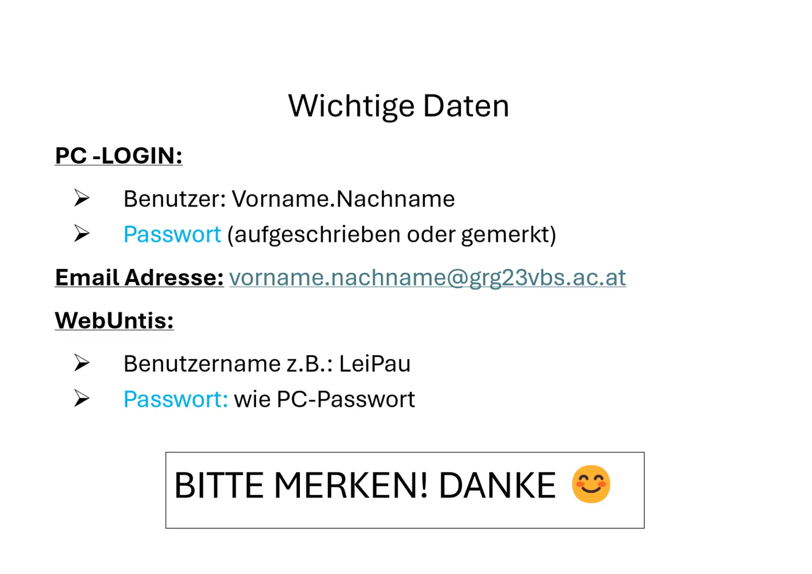

1. Sofortaufgabe: Melde dich an
1. Do now: Sign in
- Melde dich am Computer an.
- Öffne Edge und melde dich in Teams an.
- Melde dich in WebUntis an.
- Sign in to the computer.
- Open Edge and sign in to Teams.
- Sign in to WebUntis.
Wenn etwas nicht funktioniert: Hand heben und warten.
If something does not work: raise your hand and wait.
